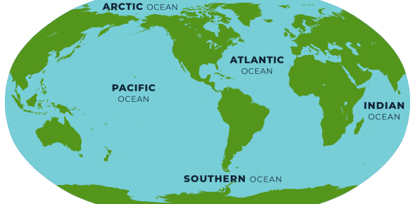

EARTH

Earth third planet from the Sun and the only astronomical object known to harbor life. While l arge is volumes the of water can be found throughout the Solar System, only Earth sustains liquid surface water. About 71% of Earth's surface is made up of the ocean, dwarfing Earth's polar ice, lakes, and rivers. The remaining 29% of Earth's surface is land, consisting of continents and islands.
continents

A continent is any of several large landmasses. Generally identified by convention rather than any strict criteria, up to seven geographical regions are commonly regarded as continents. Ordered from largest in area to smallest, these seven regions are: Asia, Africa, North America, South America, Antarctica, Europe, and Australia. you can check each continent by clicking on the below links.
OCEANS
The ocean is the body of salt water that covers approximately 70.8% of the surface of Earth and contains 97% of Earth's water. An ocean can also refer to any of the large bodies of water into which the world ocean is conventionally divided. Separate names are used to identify five different areas of the ocean: Pacific (the largest), Atlantic, Indian, Southern (Antarctic), and Arctic (the smallest).
food chain

A food chain explains which organism eats another organism in the environment. The food chain is a linear sequence of organisms where nutrients and energy is transferred from one organism to the other. This occurs when one organism consumes another organism. It begins with the producer organism, follows the chain and ends with the decomposer organism. After understanding the food chain, we realise how one organism is dependent upon another organism for survival.